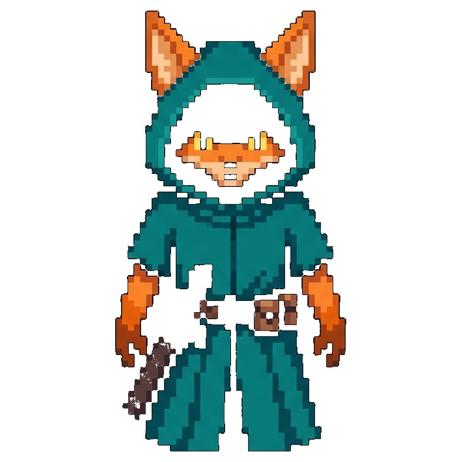
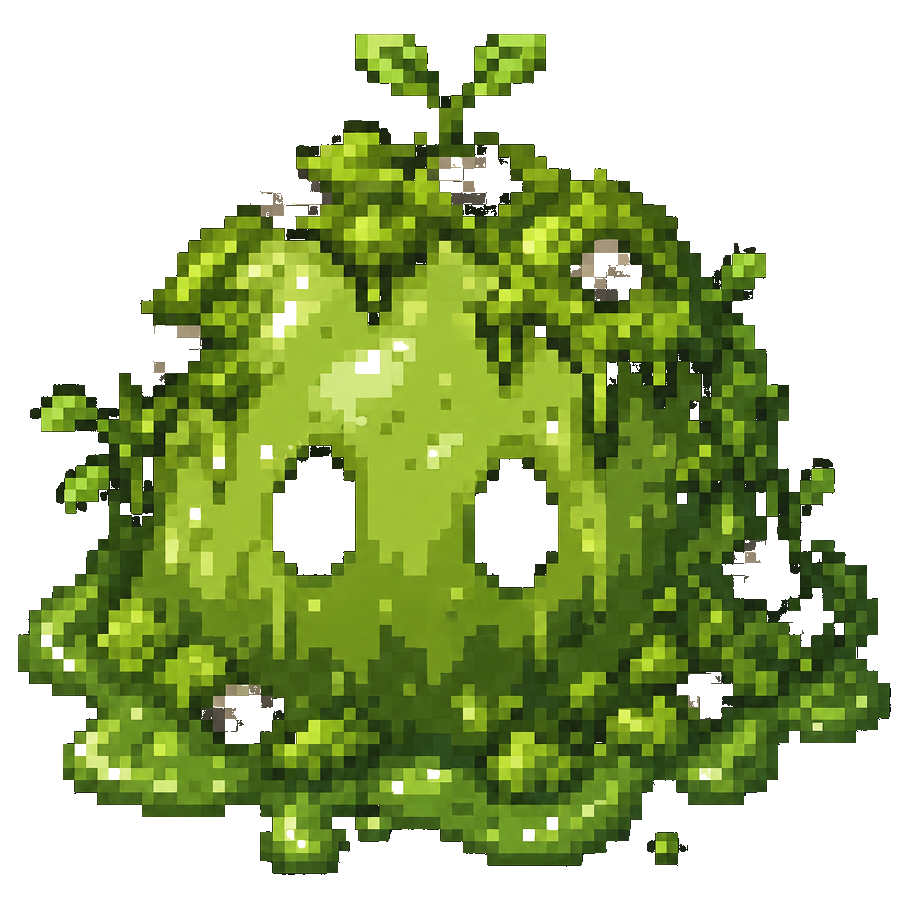
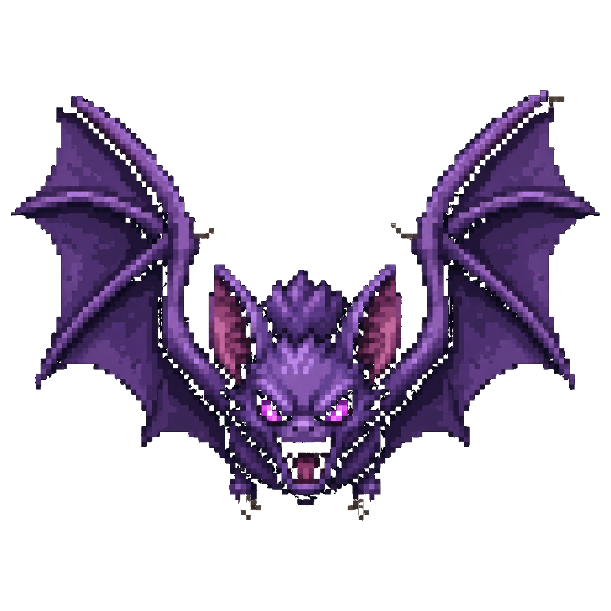

Original browser adventure
Moon Grove Quest
Collect the moon key, open the old forest gate, and awaken the crystal shrine. On phones, tap the game or START to begin.
Move: WASD / Arrow keys
Attack: Space / J
Start: Enter
Loading...
About the build
All gameplay is client-side JavaScript. Generated art guides the original forest, hero, monster, key, gate, and shrine direction while the canvas renderer keeps movement crisp and fast.


